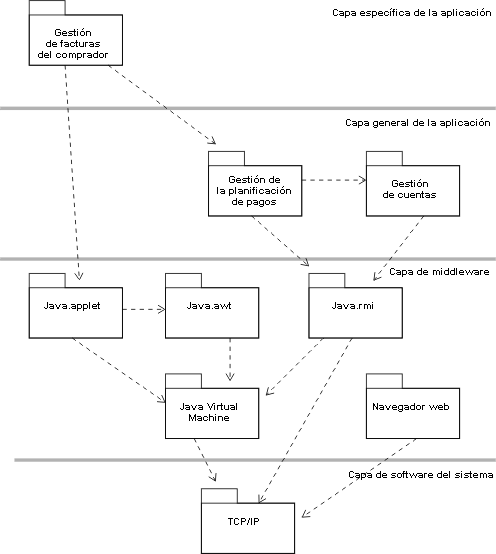

|
Objetivo
|
Tener en cuenta los nuevos elementos de modelo en la organización del modelo de diseño.
Volver a equilibrar la estructura del modelo de diseño cuando sea necesario.
|
Como se han añadido nuevos elementos al modelo de diseño, a menudo es necesario volver a empaquetar los elementos del
modelo de diseño. Al volverlos a empaquetar se consiguen varios objetivos: se reduce el acoplamiento entre paquetes y
se mejora la cohesión en los paquetes del modelo de diseño. El objetivo final es que personas o equipos independientes
puedan diseñar y desarrollar paquetes (y subsistemas) diferentes independientemente unos de otros. Aunque una
independencia completa es prácticamente imposible de conseguir, si se reduce el acoplamiento entre paquetes, el
desarrollo de sistemas grandes o complejos tiende a ser más fácil.
Una estructura de modelo 'plana' (en la que todos los paquetes y subsistemas residan en el mismo nivel conceptual en el
sistema) es adecuada para un sistema pequeño; los sistemas más grandes necesitan una herramienta de estructuración
adicional denominada 'creación de capas' (consulte Directriz de producto de
trabajo: Creación de capas). Las reglas de creación de capas definen restricciones en las relaciones permitidas
entre determinados tipos de paquetes. Estas reglas reconocen que determinadas dependencias no deben existir: la
funcionalidad de aplicaciones no debe depender directamente de servicios específicos del sistema de ventanas o del
sistema operativo; debe existir una capa intermedia que contenga los servicios lógicos de ventanas y de sistema
operativo que aíslen la funcionalidad de la aplicación de cambios en servicios de implementación de nivel inferior. La
creación de capas permite reducir el impacto del cambio: al forzar reglas que restringen las dependencias entre
paquetes y subsistemas, reduciendo el grado de acoplamiento entre paquetes y subsistemas, el sistema se hace más
robusto. El sistema tolera el cambio.
A medida que se añaden al sistema nuevos elementos de modelo, los paquetes existentes pueden aumentar demasiado para
ser gestionados por un único equipo: el paquete se debe dividir en varios paquetes con una cohesión elevada en el
paquete y un acoplamiento reducido entre los paquetes. Conseguir esto puede ser difícil: algunos elementos no se pueden
colocar fácilmente en un determinado paquete porque están siendo utilizados por elementos de los dos paquetes. Hay dos
soluciones posibles: dividir en elemento en varios objetos, uno en cada paquete (esto funciona cuando el elemento tiene
varias 'personalidades' o conjuntos de responsabilidades desconectadas de alguna forma) o mover el elemento a un
paquete en una capa inferior, para que todos los elementos de capas superiores puedan depender de él equitativamente.
A medida que aumenta la complejidad del sistema, se necesita un número mayor de capas para conservar una estructura que
se pueda mantener y entender. No obstante, no suelen darse más de 7-10 capas ni siquiera en los sistemas más grandes,
ya que la complejidad aumenta y la comprensión disminuye con el número de capas.
A continuación, se muestra un ejemplo de creación de capas, incluidas las capas de middleware y software del sistema:

Ejemplo de capas de paquete de una aplicación basada en Java/Web. Nota: las dependencias del paquete TCP/IP normalmente
no se modelarán explícitamente ya que el uso de servicios TCP/IP está encapsulado en Java VM, java.rmi y el navegador
web. Aquí se incluyen sólo a modo de ilustración.
Asigne responsabilidades de los subsistemas y las capas a las personas o los equipos. Cada paquete o subsistema debe
ser responsabilidad de una única persona (si el ámbito es pequeño) o un equipo (si el ámbito es grande).
|